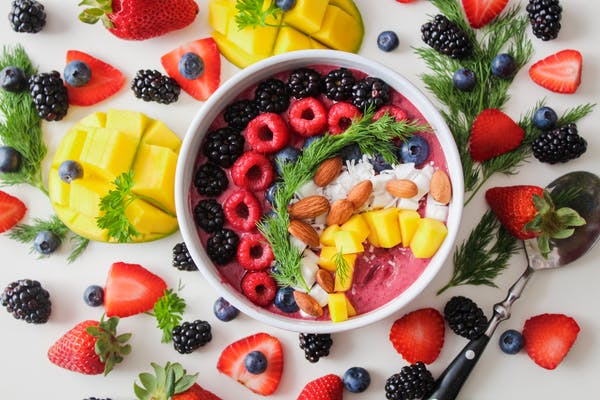
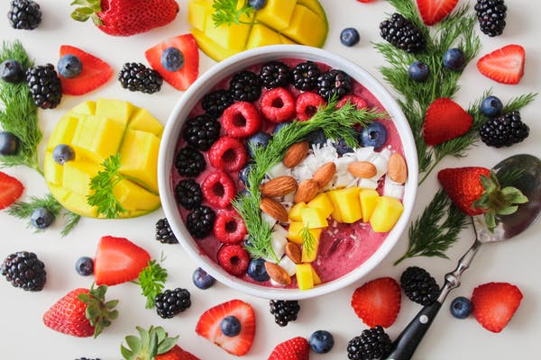

Drink apple cider vinegar
According to Sepel, adding one or two tablespoons of apple cider vinegar to a large bottle of water.
Keep to regular mealtimes
This may seem like an obvious suggestion, but eating your meals at regular, spaced out intervals
Eat fruit in the morning
We’re told that we should eat five portions of fruits and vegetables a day in an effort to maintain a healthy lifestyle


 
